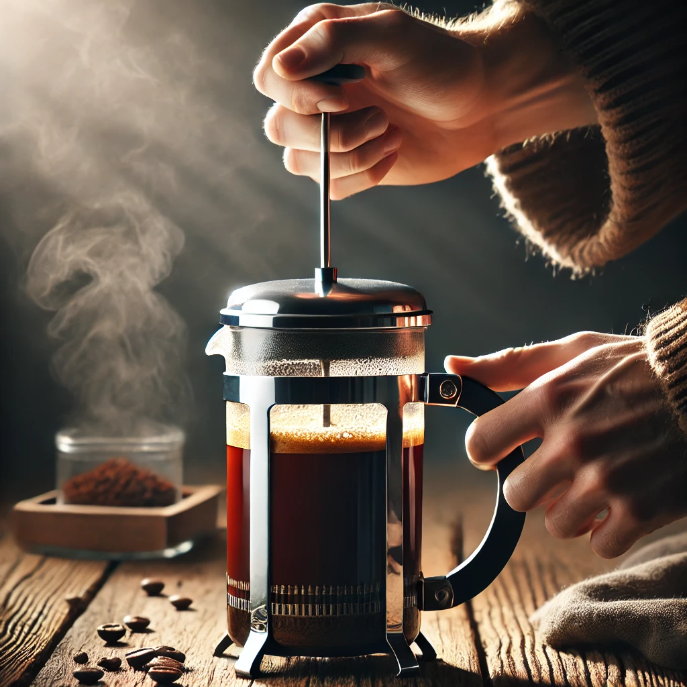

French Press
French Press bukan hanya alat seduh klasik—ia adalah gerbang menuju eksplorasi rasa kopi yang lebih dalam. Dengan metode tekan yang sederhana namun efektif, French Press mampu menghasilkan kopi yang kaya, berminyak, dan penuh karakter. Tapi tahukah kamu bahwa alat ini tidak hanya untuk membuat kopi hitam biasa? Berikut lima menu seru yang bisa kamu buat dengan French Press di rumah:

Menu kopi yang bisa dibuat dengan alat French Press
1. Classic French Press Coffee
Menu dasar yang wajib dikuasai. Gunakan rasio 1:15 (misalnya 20g kopi : 300ml air panas), seduh selama 4 menit, tekan perlahan, dan nikmati kopi full body dengan rasa alami beans-nya.
2. French Press Latte
Seduh kopi seperti biasa, lalu campurkan dengan susu panas yang dibuihkan langsung di French Press (pompa plunger naik-turun untuk membentuk foam). Hasilnya creamy dan tetap kuat di rasa kopi.
3. Cold Brew French Press
Campurkan kopi dan air dingin dengan rasio 1:8, diamkan di kulkas selama 12-18 jam, tekan perlahan, dan sajikan dengan es batu. Rasanya halus dan menyegarkan!
4. French Press Mocha
Tambahkan bubuk kakao dan sedikit gula saat menyeduh kopi. Setelah ditekan, campurkan dengan susu panas. Kombinasi kopi dan coklat ini cocok buat pecinta rasa bold tapi manis.
5. French Press Kopi Rempah (Spiced Coffee)
Masukkan bubuk kayu manis atau jahe saat menyeduh. Cocok untuk cuaca dingin atau saat ingin rasa yang hangat dan menenangkan.
0 Comments